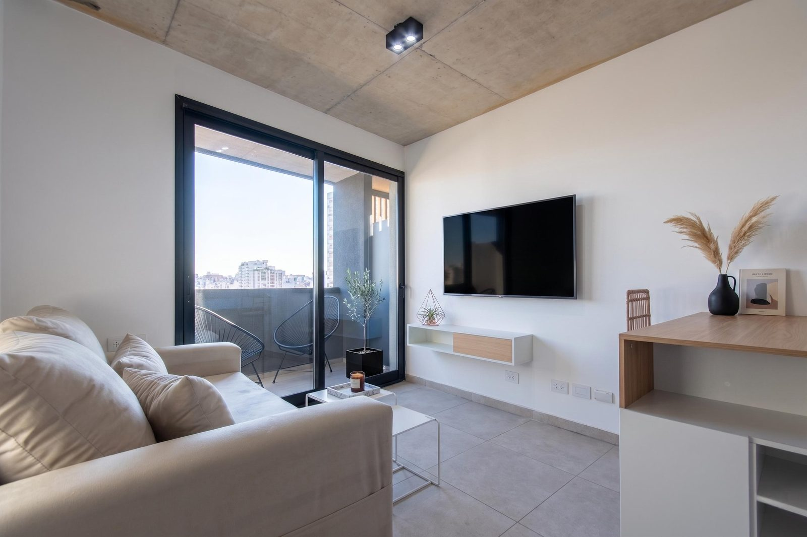

Monoambiente a Estrenar Amueblado con Amenities a 150 de Puerto Madero
Av. Paseo Colón 1062, San Telmo, Capital Federal
Ubicación
Av. Paseo Colón 1062, San Telmo · a 150 m de Puerto Madero
Ver en Google MapsDescripción de la propiedad
Departamento de 1 ambiente a estrenar, amueblado, con balcón propio y amenities, en San Telmo, a 150 metros de Puerto Madero.
Un ambiente luminoso y funcional, listo para disfrutar desde el primer día, con pisos de porcelanato y techos de hormigón visto. La unidad se entrega amueblada, con posesión inmediata.
El frente vidriado con DVH hermético aporta una aislación térmica y acústica muy superior a la habitual, y el balcón propio suma una vista panorámica de la zona. La cocina viene con mesada de Silestone y el edificio cuenta con agua caliente central a gas.
El edificio Urban Nature ofrece SUM con vista panorámica y terraza, solárium, gimnasio, laundry, bike parking y control de acceso. Es apto profesional y pet friendly.
La ubicación es estratégica: a 150 metros de Puerto Madero, con acceso directo al Paseo del Bajo y el polo cultural y gastronómico de San Telmo a pasos. Hay unidades disponibles en los pisos 10 y 11.
Las medidas y superficies son aproximadas y no resultan vinculantes; los datos definitivos son los que surgen del título de propiedad, y los precios enunciados son orientativos y no contractuales. Imágenes con fines ilustrativos (pueden incluir edición digital o amoblamiento virtual). Se deja constancia de que algunas de las imágenes y/o fotografías publicadas pueden haber sido editadas digitalmente, mejoradas mediante inteligencia artificial o contar con amoblamiento virtual con fines netamente ilustrativos, descriptivos y de referencia visual, no constituyendo una representación contractual exacta del estado actual de la propiedad. Comercializa María Llona, matrícula CPI 6681, CMZC 502. Publicado por Flippin ARQ.
Características principales
Respaldo de Confianza
María Llona · CPI 6681 · CMZC 502
Coordiná la visita
Te respondemos hoy mismo por WhatsApp.
Se abre tu WhatsApp con el mensaje escrito. Lo enviás vos.
No hace falta que te interese esta unidad.